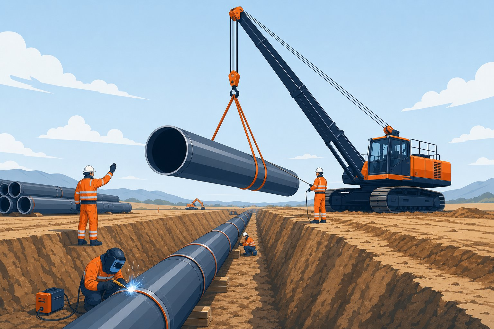

جایگاه گرید ایکس۶۵
در خطوط انتقال مدرن که فشارهای کاری بالا و اقتصاد وزن اولویت دارند، گرید ایکس۶۵ انتخاب غالب است. این گرید با حداقل حد تسلیم حدود ۴۴۸ مگاپاسکال، پلی بین گریدهای میانی و گریدهای بسیار بالا میسازد: استحکام کافی برای کم کردن ضخامت، همراه با بلوغ فناوری ساخت و تجربه اجرایی گسترده.

فناوری ساخت و خواص
لولههای این گرید معمولاً با نورد ترمومکانیک کنترلشده و افزودنیهای ریزآلیاژی تولید میشوند. نتیجه ریزساختار سوزنی یا ریزدانه با خواص عالی است:
| خاصیت | وضعیت در گرید ایکس۶۵ |
|---|---|
| حداقل حد تسلیم | حدود ۴۴۸ مگاپاسکال |
| حداقل استحکام کششی | حدود ۵۳۰ مگاپاسکال |
| چقرمگی | بالا؛ با تست ضربه و در صورت نیاز تست افت وزنی |
| کنترل شیمیایی | معادل کربن و عناصر آلیاژی کنترلشده برای جوشپذیری |
اقتصاد وزن در خطوط طولانی
در فشار طراحی یکسان، کاهش ضخامت دیواره مستقیماً تناژ، هزینه حمل و بار جوشکاری را کم میکند. در خطوط چندصد کیلومتری، این صرفهجویی میتواند از هزینه هر تن بالاتر این گرید فراتر رود؛ به همین دلیل تحلیل چرخه عمر، مبنای درست انتخاب است نه قیمت خرید بهتنهایی.
الزامات جوشکاری و اجرا
- دستورالعمل جوشکاری صلاحیتدار متناسب با گرید و ضخامت.
- کنترل ورودی گرما برای حفظ چقرمگی ناحیه متأثر از حرارت.
- پیشگرم در ضخامتهای بالا یا دمای محیطی پایین.
- کنترل هیدروژن و شرایط خشک الکترودها.
- بازرسی کامل جوشهای میدانی با روشهای غیرمخرب.
چکلیست استعلام
- فشار طراحی، کلاس منطقه و ضریب طراحی را ارائه کنید.
- گرید و سطح مشخصه محصول را صریح ذکر کنید.
- الزامات تست ضربه و دمای آن را مشخص کنید.
- روش ساخت و پوشش مورد نیاز را بنویسید.
- گواهی مواد، گزارش تستها و قابلیت ردیابی را درخواست کنید.
مقایسه سریع با گرید ایکس۵۲
در فشار طراحی یکسان، ارتقا از گرید ایکس۵۲ به این گرید ضخامت دیواره را کاهش میدهد و در خطوط طولانی، صرفهجویی قابل توجهی در تناژ و هزینه حمل ایجاد میکند. در مقابل، الزامات جوشکاری دقیقتر و قیمت هر تن بالاتر میرود. بنابراین تحلیل اقتصاد وزن باید بر مبنای طول خط و فشار کاری انجام شود، نه مقایسه ساده قیمت خرید.
سرویس ترش و الزامات چقرمگی برای ایکس۶۵
گرید ایکس۶۵ به دلیل استحکام بالای خود، در بسیاری از خطوط انتقال گاز و نفت انتخاب میشود؛ اما همین استحکام، حساسیتهای ویژهای در برابر سرویسهای ترش و ترکخوردگی ایجاد میکند که باید از مرحله سفارش کنترل شوند. وقتی خط حاوی سولفید هیدروژن است، صرف نوشتن گرید ایکس۶۵ کافی نیست؛ باید الزامات تکمیلی سرویس ترش مطابق موازین نِیس برای سطح یک، دو یا سه متناسب با فشار جزئی گاز ترش صریحا در برگه مشخصات ذکر شود. این الزامات، محدودیتهای سختی، آزمونهای ترک ناشی از هیدروژن و کنترل ریزساختار را به خرید اضافه میکنند و مستقیما بر قیمت و زمان تحویل اثر میگذارند؛ بنابراین اعلام شرایط واقعی سرویس به فروشنده، یک تصمیم فنی-اقتصادی کلیدی است. برای خطوط گاز با فشار بالا، افزون بر آزمون کشش و ضربه معمول، آزمونهای کنترل گسترش ترک مانند آزمون وزن افتادن که رفتار توقف ترک در بدنه لوله را نشان میدهند اهمیت پیدا میکنند و در استانداردهای تکمیلی برخی کارفرمایان الزامیاند. دمای انتقال شکنندگی که در آن رفتار لوله از شکست نرم به شکست ترد تغییر میکند نیز باید متناسب کمینه دمای محیط مسیر تعیین شود؛ در مناطق سردسیر، این دما مستقیما الزامات آزمون ضربه در دمای پایینتر را دیکته میکند. نکته مهم دیگر، کنترل خواص در جهت عرضی است؛ در گریدهای بالای ایکس۶۵، تفاوت خواص طولی و عرضی بیشتر میشود و در طراحیهایی که خمش عرضی یا زمینلغزش مطرح است باید لحاظ گردد. در بازرسی ورودی، کنترل مدارک آزمون کارخانه شامل نتایج کشش، ضربه، سختی و هیدرواستاتیک هر شاخه یا هر کویل و تطبیق آنها با برگه مشخصات، مهمترین اقدام قبل از بارگیری است. در نهایت به یاد داشته باشید که ترکیب الزامات سرویس ترش با الزامات دمای پایین، هر دو بر متالورژی و عملیات حرارتی اثر دارند و باید همزمان و بدون تناقض سفارش داده شوند.
جمعبندی
گرید ایکس۶۵ برای خطوط پرفشار مدرن، انتخابی اثباتشده است؛ با طراحی دقیق، اجرای منضبط و مدارک کامل، ایمنی و اقتصاد را همزمان تأمین میکند.
سوالات رایج
چرا این گرید در خطوط پرفشار انتخاب میشود؟
حد تسلیم حدود ۴۴۸ مگاپاسکال اجازه میدهد در فشار کاری یکسان، دیواره نازکتر و در نتیجه وزن و هزینه حمل کمتری نسبت به گریدهای پایینتر داشته باشیم؛ بدون افت چقرمگی که با فناوریهای نوین نورد تأمین میشود.
نورد ترمومکانیک چه مزیتی دارد؟
کنترل همزمان دما و تغییر شکل در مراحل پایانی نورد، ریزساختار بسیار ریز و یکنواختی ایجاد میکند که استحکام و چقرمگی را همزمان بالا میبرد؛ بدون نیاز به آلیاژ سنگین.
الزامات جوشکاری این گرید چیست؟
کنترل دقیق معادل کربن، محدودیت ورودی گرما، رعایت پیشگرم در شرایط لازم و دستورالعمل جوشکاری صلاحیتدار. کیفیت جوش میدانی در این گرید مستقیماً ایمنی خط را تعیین میکند.
آیا برای سرویس ترش مناسب است؟
با کنترلهای تکمیلی بله؛ در سرویس ترش محدودیتهای سختی و ریزساختار سختگیرانهتر میشود و باید در استعلام صریحاً ذکر شود تا محدودیتهای مربوطه اعمال گردد.
مطالب مرتبط
- راهنمای لوله خط انتقال؛ سطوح مشخصه و گریدها
- مقایسه گریدهای ایکس۵۲، ایکس۶۰ و ایکس۶۵
- لوله خط انتقال گرید ایکس۵۲
- لوله خط انتقال گرید ایکس۷۰
- راهنمای بازرسی درز جوش لولههای جوشی
با ارائه فشار طراحی و کلاس منطقه، ضخامت بهینه و الزامات تست پیشنهاد میشود. گواهی مواد، نتایج تست ضربه و گزارش بازرسی همراه محموله ارائه میشود.
مشاهده صفحه محصول ← ثبت RFQ همین محصولتامین این تجهیزات را به پیشرو تجهیز فرتاک بسپارید
شرکت پیشرو تجهیز فرتاک تامینکننده تخصصی تجهیزات صنعتی برای پروژههای نفت، گاز، پتروشیمی، فولاد و نیروگاهی است. برای دریافت پیشنهاد فنی و قیمت، استعلام (RFQ) خود را ثبت کنید تا کارشناسان مهندسی فروش در کوتاهترین زمان پاسخ دهند.
- تامین لوله انتقاللوله خط انتقال گرید بالا با گواهی مواد و تست
- تامین تجهیزات صنایع نفت و گازپکیج کامل خطوط انتقال مطابق وندورلیست